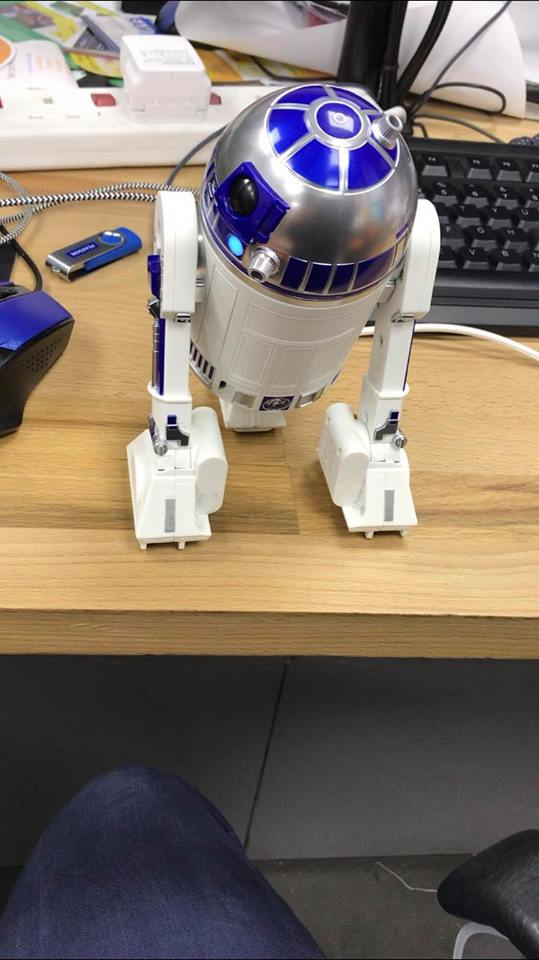
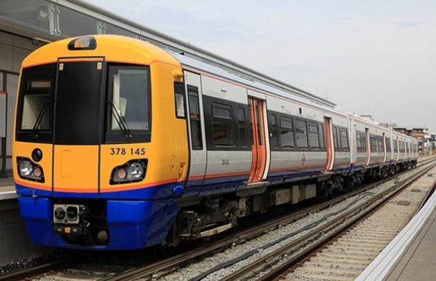

Curriculum Vitae + motivatiebrief
Curriculum Vitae

Motivatiebrief

Intentieverklaring
Stage Verslagen
Zondagochtend 6:00 in de morgen ging mijn wekker al af, we moesten om 7uur aan het station staan om zo de trein te nemen richting Brussel om dan op de Eurostar te gaan. De reis naar Brussel verliep vlot zoals verwacht, eenmaal aangekomen in Brussel moesten we nog een uurtje of 2 wachten totdat we op de Eurostar konden gaan. Iedereen had genummerde plaatsen maar we gingen zitten waar we wilden.
De rit naar Engeland ging redelijk snel (ik sliep het meeste deel). Eens aangekomen in St-Pancras moesten we nog wachten op de bus die ons uiteindelijk naar ADC ging brengen. Eens aangekomen aan ADC moesten we gewoon wachten totdat ons gastgezin ons kwam ophalen. Ik (en de rest van 6INFB) zaten bij hetzelfste gastgezin als vorig jaar. Eens aangekomen in Mill Hill zagen we dat Carmell(host-vrouw) niet thuis was, het was enkel haar zoon Michael. Hij maakte lasagna met frietjes voor ons, het was lekker.
Ik heb eindelijk Carmell terug gezien, het weerzien was heel leuk, we hebben veel bijgepraat en herinneringen opgehaald. Het weerzien met de jongste dochter (Charlotte) was ook heel leuk. De rest van de dag spendeerden we in ADC college.
Zij verwelkomde ons en maakte een paar afspraken omtrent de stage, administratie,... voor mij was er niks nieuws om te horen want ik had alles al gehoord. Na de uiteenzetting ben ik gaan eten met Joey. Erna zijn we nog naar Londen zelf geweest, ik wilde veel meer van Londen zien dan dat ik vorig jaar had gezien, hopelijk lukt het.
Verder zijn we ook nog naar SkyGarden geweest. SkyGarden is een heel groot gebouw met zicht over gans londen (foto). Op de foto zie je Engels bier met als achtegrond de overview van Londen.
Joey en ik dachten dat het de ideale moment was om dit te drinken. Dat leek ook zo, een geweldig uitzicht, rusitg een beetje praten, elkaar leren kennen. Niks was minder waar, voor 2 pintjes in SkyGarden betaalde je 15Pond! Ik persoonlijk vind dat wel veel te duur voor wat het maar is uiteindelijk. Maar de dag zelf was in 1 woord geweldig.
 Vandaag was het de eerste werkdag, het weerzien met de collega's (en Casey) was heel harterlijk ,iedereen was blij om mij terug te zien en ik was blij om hen terug te zien. Echt veel gewerkt hebben we niet, we hebben meer gepraat en herinneringen opgehaald, alsook heb ik een update gekregen over de IDEAS BUS, wat er veranderd is en wat ze nog doen. Wat is the IDEAS BUS? The IDEAS BUS is een Amerikaanse schoolbus met allerlei technologie op. Ook doen ze (als ze bezig zijn met de bus) een sessie in een klaslokaal, deze keer is het met Controleable BB8, R2D2 en een Kamibot. BB8 en R2D2 zijn alle 2 van Star Wars en worden gecontroleerd door een app op een iPad. De Kamibot wordt ook bestuurd door een controller op een tablet/iPad. Het verschil met de R2D2 en BB8 is dat je zelf code moet invoeren bij de Kamibot (basic code). En voor de rest hebben we goed gelachen, veel gerpaat. Een perfecte eerste “werk”dag dus.
 EIN-DE-LIJK! Ik kon weer op The IDEAS BUS. De dagen ervoor (woensdag en donderdag) heb ik een step by step guide gemaakt over de after school coding club dat ze daar doen, in de after school coding club leren ze kinderen (6-13) het begin van coderen, binair,... gewoon de basis van coderen dus. Het probleem was dat ze een step-by-step guide maken maar die was niet goed. Sommige kinderen hebben nog nooit een muis of computer van dicht gezien. Ik moest dus letterlijk alles met foto's aanduiden, zoals bijvoorbeeld: “klik 2 keer op het fuze icoontje op je bureaublad”, dan heb ik letterlijk met foto's gezegd dat ze daar 2 keer op moeten klikken, alsook met tekst. Ikzelf noemde het: “Coding for dummies”.
Ik geraakte er deze week niet klaar mee dus moet ik er volgende week mee verderdoen, vind ik helemaal niet erg want het is wel leuk.
Maar goed, de bus, eindelijk na zolang ernaar toe hebben uitgekeken was het weer tijd om op de bus te gaan. Het was in een school genaamd “Glebe”.
Dat was maar 30min van Mill Hill dus kon ik langer slapen.
Het eerste gedeelte van de dag zat ik het klaslokaal bij de BB8, R2D2 en de Kamibot. De kinderen luisterden goed en ik had er weinig tot geen problemen mee. Over de middag trakteerde Casey ons op fish and chips. We hadden tijd genoeg om te eten (1uur) en na zo een ganse voormiddag met kleine kinderen kwam dat heel goed van pas. In de namiddag zat ik dan in de bus, ik hielp de kinderen met coderen (basis coding). Hier ook weinig tot geen problemen mee gehad.
De voorbije dagen waren allemaal heel leuk en ik kijk uit naar de rest van volgende week.
EIN-DE-LIJK! Ik kon weer op The IDEAS BUS. De dagen ervoor (woensdag en donderdag) heb ik een step by step guide gemaakt over de after school coding club dat ze daar doen, in de after school coding club leren ze kinderen (6-13) het begin van coderen, binair,... gewoon de basis van coderen dus. Het probleem was dat ze een step-by-step guide maken maar die was niet goed. Sommige kinderen hebben nog nooit een muis of computer van dicht gezien. Ik moest dus letterlijk alles met foto's aanduiden, zoals bijvoorbeeld: “klik 2 keer op het fuze icoontje op je bureaublad”, dan heb ik letterlijk met foto's gezegd dat ze daar 2 keer op moeten klikken, alsook met tekst. Ikzelf noemde het: “Coding for dummies”.
Ik geraakte er deze week niet klaar mee dus moet ik er volgende week mee verderdoen, vind ik helemaal niet erg want het is wel leuk.
Maar goed, de bus, eindelijk na zolang ernaar toe hebben uitgekeken was het weer tijd om op de bus te gaan. Het was in een school genaamd “Glebe”.
Dat was maar 30min van Mill Hill dus kon ik langer slapen.
Het eerste gedeelte van de dag zat ik het klaslokaal bij de BB8, R2D2 en de Kamibot. De kinderen luisterden goed en ik had er weinig tot geen problemen mee. Over de middag trakteerde Casey ons op fish and chips. We hadden tijd genoeg om te eten (1uur) en na zo een ganse voormiddag met kleine kinderen kwam dat heel goed van pas. In de namiddag zat ik dan in de bus, ik hielp de kinderen met coderen (basis coding). Hier ook weinig tot geen problemen mee gehad.
De voorbije dagen waren allemaal heel leuk en ik kijk uit naar de rest van volgende week.
Vandaag zou het de bedoeling zijn geweest dat we met z'n allen naar Natural History Museum gingen gaan. Jeffrey, Dylan en ik zijn niet gekomen. We hadden de avond ervoor een feestje (St-Patricks day) en dat hadden we te goed gevierd. Resultaat was dus dat ik 4-5 uur te laat was en dus meneer Lippens moest gaan zoeken. Na veel vijven en zessen had ik hem dan toch (met Joey) gevonden. Ik heb alles uitgelegd en hij begreep het, al zei hij wel dat er nog wel sancties zullen volgen, was overgens volledig terecht zou zijn.  Erna heb ik met Joey gedaan wat we de dagen ervoor ook hadden gedaan, we “exploren” de verschillende delen van Engeland. Zo zaten we vorige week op de “London overground” hetgeen we niet wisten was dat die ook buiten londen (ver, echt ver buiten londen) ging, we keken op Google Maps en zagen dat we al 15KM buiten londen zaten. Het eerste beste station stapten we dus af en zochten onze weg terug richting huis. Een paar uur later geraakten we alle 2 veilig thuis, al was het wel een avontuur op zicht. We bezochten veel winkels en hadden veel plezier.
Vandaag is het de laatste werkdag, de afgelopen dagen heb ik niet veel gevlogd omdat het elke dag hetzelfde was. Deze werkdag was natuurlijk anders. We gingen dus (voor de eerste keer deze week) naar een school met de bus. Ook dit was weer heel leuk. Ondertussen waren er ook nog 2 andere mensen toegekomen. Arina (20) en Yannick (21), ze kwamen alle 2 van Duitsland en bleven 2 weken. Ik werkte samen met Arina, ik legde haar uit hoe alles werkte zodat ze alles kon uitleggen aan de kinderen ook. Ik heb eerst mijn “speech” gegeven aan de kinderen over de 2 voorwerpen (R2D2 en KAMIBOT) over hoe alles werkt en hoe het bediend wordt etc. daarna was het aan haar om het over te nemen voor de Kamibot. De samenwerking tussen België en Duitsland ging heel vlot en zorgde nauwelijks voor problemen. Nadat de werkdag erop zat trakteerde Casey ons nog op een paar spelletjes TOPGOLF (vlog). Je staat boven op een platform en moet het golfballetje zover mogelijk spelen. Klinkt makkelijk, is het echt niet. Na de 4 games kregen we ook eten van hem, ook hier trakteerde hij. Het was dus weer een geslaagde (goedkope) dag. Erna reden we nog een gans stuk terug met de bus voor Casey ons afzette om de bus terug naar huis te nemen. Het was een heel lange dag, ik was wakker van 5 uur en was pas thuis rond 23uur. Een lange geslaagde dag.
Informatiesysteem